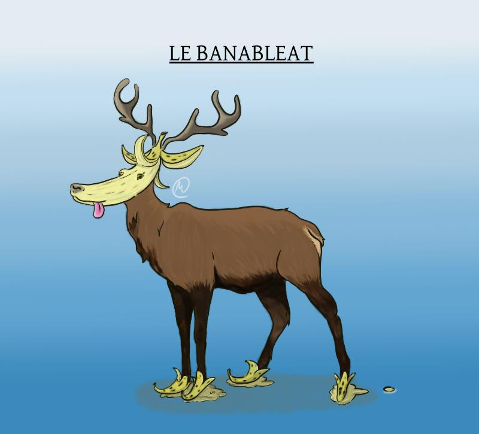
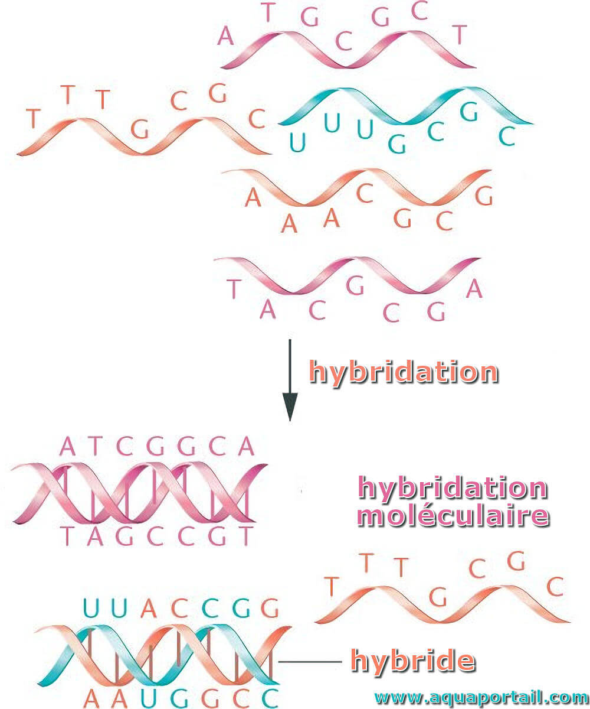
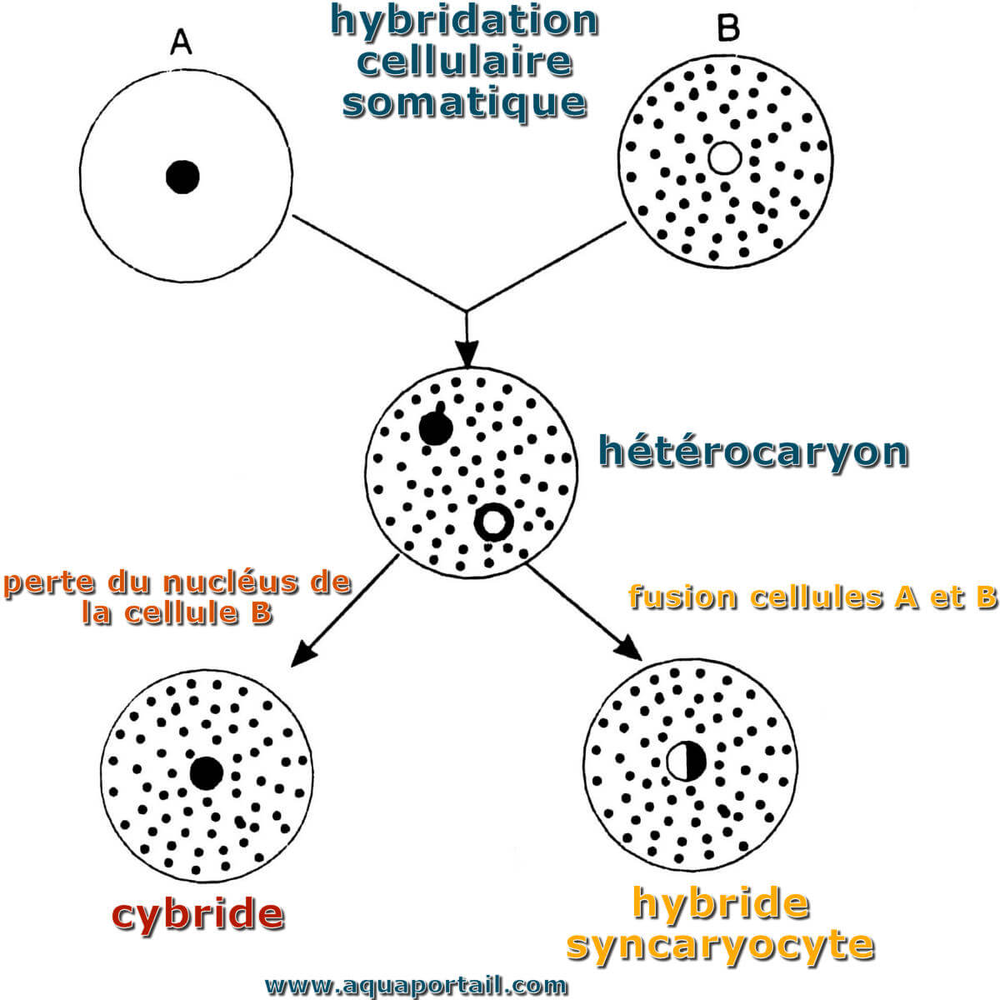

L'Hybridation : une science très étonnante
Vous connaissez tous le mulet. Aussi fort qu’un cheval et aussi résistant qu’un âne, cet équidé est très répandu depuis le Vème siècle. Mais quel est son secret ? Prend-il une sorte de potion magique ? Il se trouve que Panoramix n’y est pour rien.
Ce mot assez barbare, hybridation, désigne un croisement génétique qu’il soit naturel ou artificiel entre deux organismes de variétés, de races ou d'espèces différentes. Les animaux issus d’hybridation sont presque toujours stériles, c'est-à-dire qu’ils ne peuvent pas avoir une descendance. Il existe néanmoins des exceptions : chez les Tigrons ( hybridation artificielle entre une Lionne et un Tigre) les femelles sont fertiles. L’hybridation artificielle pose un grand débat éthique. Ce débat s'articule autour d'une question forte : Pouvons- nous nous comporter comme des dieux qui expérimentent la création de la vie ? Il a de plus été constaté que la plupart des hybrides, produits de manipulation humaine en captivité, sont incapables de survivre dans la nature et peuvent connaitre au cours de leur vie de nombreuses complications médicales.
Prenons l’exemple du Ligre (croisement entre un Lion et une Tigresse), il est généralement bien plus gros que ses deux parents (parfois que ses deux parents réunis) avec un poids pouvant atteindre 400 kg et une taille allant jusqu'à 3.60 m.
Si elles font de lui le plus gros félin au monde, ces caractéristiques le rendent également inadapté à la chasse et donc au monde sauvage. Ils souffrent de plus bien souvent de malformations congénitales qui font que peu atteignent l'âge adulte. Des exemples qui rendent très contestables l'hybridation chez les animaux.On peut noter que lorsque l’hybridation est faite en botanique les possibilités d’utilisation et de viabilité sont hautement plus importantes en permettant à l’Homme de modeler les plantes selon ses besoins et ses envies. On choisit ainsi de faire se reproduire des variétés horticoles particulièrement bien adaptées à certaines conditions. Leur croisement permettra d'obtenir de meilleurs spécimens associés à une meilleure production et une réduction des couts.
Voici l'hybridation vue par Moss, dessinatrice du club
L'hybridation entre plantes fut aussi l'objet de découvertes majeures comme celle d'un moine catholique du nom de Johann Gregor Mendel. Ce pionnier de la botanique, de la biologie et de la génétique travaillait notamment sur les croisements chez le petit pois et a découvert la notion de gènes récessifs et de gènes dominants. Ainsi, en 1866, il a publié l’un des fondements de la génétique moderne, "Experiments on Plant Hybridization".
A l’hybridation entre différents organismes s'ajoutent d’autres types d’hybridations telles que l’hybridation cellulaire (entre deux cellules), moléculaire (ex : entre deux acides nucléiques de l'ADN) et atomique.

Ces deux formes d'hybridations sont les fondements de celle-ci et il s'agit en effet de 2 procédés bien différents.
- Sources :
- https://www.aquaportail.com/definition-9670-hybridation-moleculaire.html
- https://www.aquaportail.com/definition-9669-hybridation-cellulaire.html
- https://www.nationalgeographic.fr/animaux/2022/10/lhybridation-un-phenomene-bien-plus-courant-quil-ny-parait
- https://www.especes-menacees.fr/dossiers/hybridation-genetique-especes-menacees/
- https://fr.wikipedia.org/wiki/Sp%C3%A9ciation_par_hybridation
- https://www.geo.fr/voyage/la-triste-verite-sur-les-animaux-hybrides-157497
- https://www.aquaportail.com/definition-2601-hybridation.html
- https://en.wikipedia.org/wiki/Experiments_on_Plant_Hybridization#Analysis